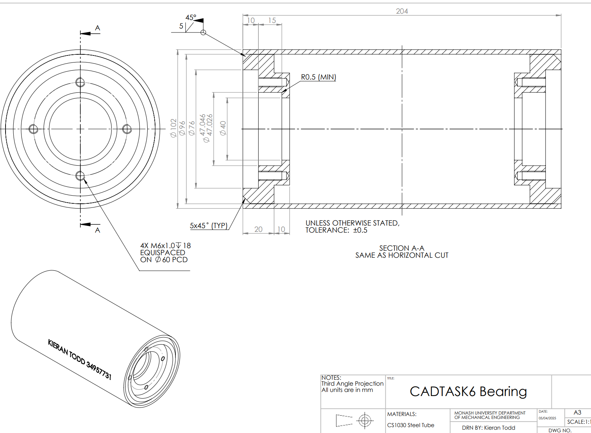
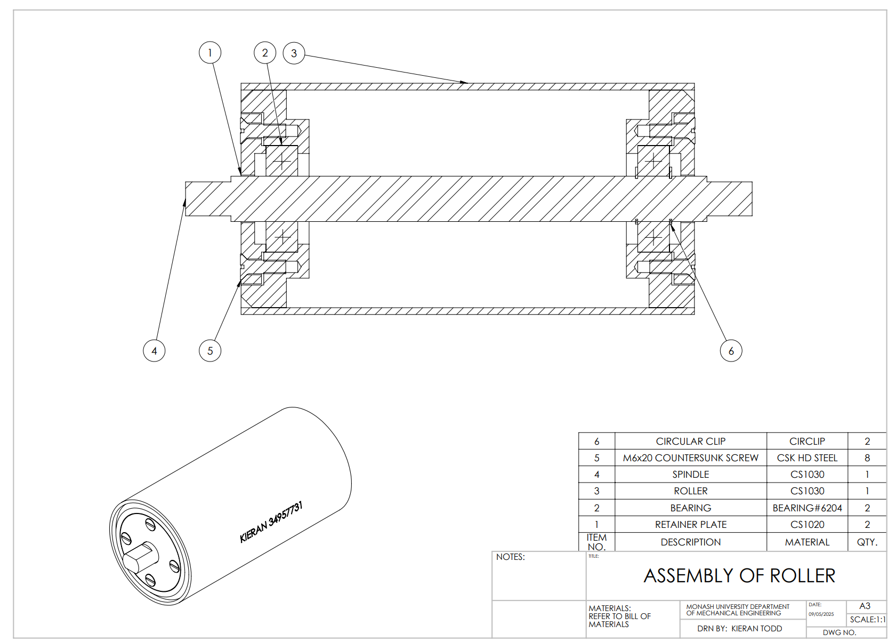

SolidWorks - Mechanical design
CAD Portfolio
A selection of CAD models I have designed and developed through university and personal projects. These projects demonstrate my experience with 3D part modelling, assemblies and technical drawings.
- 3D Part Modelling - Parametric modelling of mechanical components.
- Assembly Design - Multi-component assemblies using mates and motion constraints.
- Technical Drawings - Manufacturing drawings in accordance with AS 1100.
- Finite Element Analysis - Running basic FEA studies to determine max stress, factor of safety and deflection.
- Sheet Metal Parts - Flanges, bends and flat patterns.

This was a personal project, practicing modelling from old engineering schematics.gained further experience in many different tools such as: sheet metal, hole wizard, shell and loft.
Mechanism design - Assembly - Interpreting Schematics
Modified an existing wheelchair design to assist in the movement between the wheelchair and bed for elderly people. Worked with existing dimensions to ensure seamless attachment.
Design - Assembly - Motion - Render
Commended by lecturor as an example for the cohort due to the attention to detail.
In the 5 best examples of 100 teams.

A small example of a technical drawing following AS1100 design standards.
Engineering Drawing (AS1100)
A small example of a technical assembly following AS1100 design standards.
Engineering Assembly (AS1100)